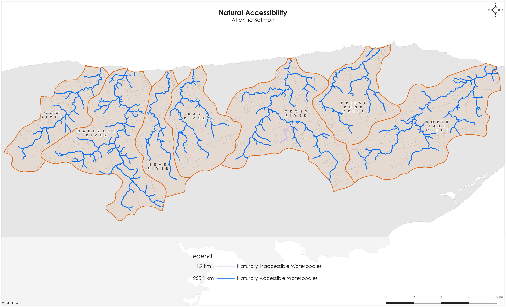
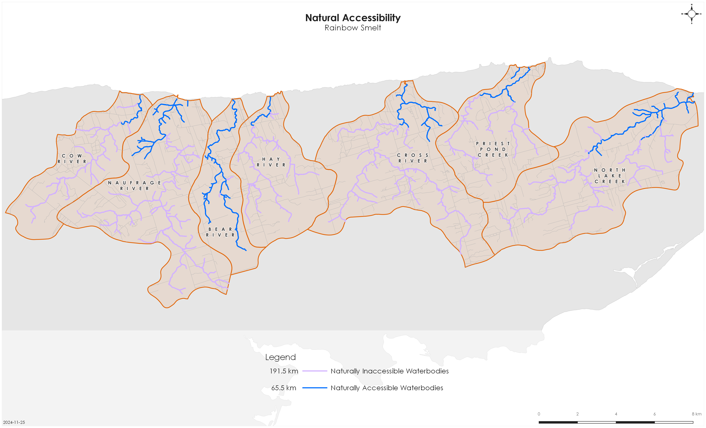

| Species | Accessiblity Parameters |
|---|---|
| Atlantic Salmon | Channel gradient <30%; waterfalls <5m |
| American Eel | All stream segments |
| Rainbow Smelt | Channel gradient <5%; all waterfalls |
Vision Statement
SAB strives to address and remove human-made and natural barriers in our managed rivers that could impact movement and the natural life cycles of aquatic species. SAB will work hard to attain and sustain dynamic watershed ecosystems with optimal physical, biological, and chemical conditions to support native wildlife populations and environmental network functionality so that fish populations can access the habitat that they need to survive and thrive in throughout their life cycles without barriers that could distress them. This will allow our local waterways to be and remain beneficial and healthy for future generations.
Project Scope
Connectivity is a critical component of freshwater ecosystems that encompasses a variety of factors related to ecosystem structure and function, such as the ability of aquatic species to disperse and/or migrate, the transportation of energy and matter (e.g., nutrient cycling and sediment flows), and temperature regulation (Seliger and Zeiringer (2018)). Though each of these factors are important when considering the health of a watershed, for the purposes of this WCRP the term “connectivity” is defined as the degree to which aquatic species can disperse or migrate freely through freshwater systems. Within this context, connectivity is primarily constrained by physical barriers, including human-made infrastructure such as dams and stream crossings, and natural features such as waterfalls, barrier beaches, and beaver dams. This plan will focus on the direct rehabilitation and prevention of localized, physical barriers instead of the broad, land-use patterns causing chronic connectivity issues in the watershed. The planning team decided that the primary focus of this WCRP is addressing barriers to longitudinal connectivity (i.e., along the upstream-downstream plane) due to the importance of maintaining fish passage to spawning and rearing habitat in the watershed.
The geographic scope of this WCRP is seven watersheds (North Lake Creek, Priest Pond Creek, Cross River, Hay River, Bear River, Naufrage River and Cow River) in Souris, PEI, (Figure 1). The seven watersheds have a total drainage area of 205.46 km2 (with 257 linear km of streams and rivers) ranging from 2.5 km2 in Priest Pond Creek to ~49 km2 in North Lake Creek, spanning as far west as Selkirk and as east as North Lake and draining into the ocean.

Focal species
Focal species represent the ecologically and culturally important species for which habitat connectivity is being directly conserved or restored in the watershed. The planning team selected three focal species: Atlantic Salmon, American Eel, and Rainbow Smelt. While Brook Trout were initially discussed as a potential focal species, they were not specifically included in this iteration of the connectivity plan given that addressing barriers to Atlantic Salmon would indirectly benefit Brook Trout populations that are seemingly abundant across the seven watersheds. The selection of these focal species was driven primarily by local conservation goals.
Atlantic Salmon | Salmo salar
Atlantic Salmon are anadromous fishes, meaning mature adults spawn in freshwater and juveniles rear in freshwater before undergoing a process called smoltification where they migrate out to the ocean for 1-3+ years before returning to the freshwater to repeat this process. Due to this migratory process, salmon require unimpeded access between the ocean and freshwater habitats to complete their life cycle.
Atlantic Salmon spawn in the pool-riffle transition zones of the main stem and larger tributaries of a river (De Gaudemar, Bonzom, and Beall (2000); Finstad, Armstrong, and Nislow (2010)). Within these stretches, they seek out the tails of pools, where substrate size allows for females to excavate a space to deposit the eggs to incubate below gravel beds. Fast flowing, well oxygenated water with minimal fine sediments helps to maximize successful embryo development. Atlantic Salmon juveniles (fry and parr) rear in habitat that is deeper and slower, to facilitate their weaker swimming and predation capabilities. Water depth, velocity, and substrate size tend to increase with parr as they increase in size and age. Shelter, in the form of large rocks, boulders, or overhead cover provide crucial refuge for overwintering habitat. Channel gradients most typically associated with these preferred spawning and rearing habitats range from 0.12 to 25%; with highest concentrations below 3% (Amiro (1993)).
Atlantic Salmon spawn in all seven of these watersheds in northeastern PEI, with North Lake Creek, Cross River, and Naufrage River supporting the highest productivity. Returns have declined in Priest Pond Creek, Hay River, Bear River, and Cow River over the past four to five years. Salmon in this region are within the proposed Gaspe-Southern Gulf of St. Lawrence designable unit, and were assessed by Committee on the Status of Endangered Wildlife in Canada (COSEWIC) as Special Concern in 2010 (COSEWIC (2010)). See (Appendix B) for maps of modelled salmon habitat in the seven watersheds.
American Eel | Anguilla rostrata
American Eel are catadromous species, meaning they spawn in the Sargasso Sea and drift with the ocean currents towards the continental shelf as glass eels. Elvers then continue migrating towards freshwater tributaries to feed and mature, although some populations have been known to stay in the estuaries and bays or move between freshwater and estuary habitat over their life cycle. Their ability to tolerate a wide variety of salinities and temperature thresholds allows them to occupy a variety of habitat types. See (Appendix B) for maps of modelled eel habitat in the seven watersheds.
American Eel are widely distributed throughout the seven PEI watersheds and occupy freshwater habitat and estuary habitat for feeding (on small fish, mollusks, insects, and crustaceans) and growth. SAB did a burrowing survey in 2018 to confirm both salt water and freshwater abodes for American eel. Notable habitat sites for eels in our management area include North Lake Creek and Naufrage River. They are found in almost all the seven salmon rivers in northeastern PEI, but populations are the largest and healthiest in North Lake Creek and Naufrage River. It is known that eels are non-specific in what habitat they prefer while on Prince Edward Island, but impediments like perched or hanging culverts can hinder passage to areas where food sources may be best to allow them to suitably develop and grow. The bigger they become the best chance they have of reaching sexual maturity and in turn can migrate to achieve species proliferation. American Eel were assessed as Threatened by COSEWIC in 2012 (COSEWIC (2012)).
Rainbow Smelt | Osmerus mordax
Rainbow Smelt in PEI are anadromous, meaning they migrate from the ocean to freshwater habitats where they spawn following the spring freshet. Spawning generally takes place in lower elevations of rivers and streams. Rainbow smelt requires substrate such as silt, gravel and rock, and aquatic vegetation and wood debris to deposit their eggs during spawning. See (Appendix B) for maps of modelled smelt habitat in the seven watersheds.
Smelts are a popular food fish for many Islanders and support a commercial and recreational fishery. The smelt dip net fishery runs from April 1st to June 15th and the angling season is open from April 15th to September 15th. Not a lot is known about smelt runs, except for local traditional fishing knowledge regarding times for fishing and areas for fishing smelts.They do tend to be moving when Atlantic Salmon smolts are making their migration towards the ocean from upstream habitat areas, in mid-May to mid-June.
Geographic Scope
The geographic scope of this WCRP was further refined by identifying “naturally accessible” waterbodies, which are defined as streams, lakes, or reservoirs that focal species should be able to access in the absence of human-made barriers. Naturally accessible waterbodies were spatially delineated for each species using stream characteristics that define the upper limit of their movement based on their swimming abilities (Table 1). Areas of high, sustained beaver activity that has led to long-term changes in the habitat conditions were excluded from the salmon model due to the unfavorable conditions for barrier rehabilitation. The spatial extent of the naturally accessible waterbodies layer was then refined based on existing fish observation data or redd surveys (for Atlantic Salmon). These maps were explored by the planning team to incorporate additional local knowledge, ensure accuracy, and finalize the criteria used to define naturally accessible waterbodies, which are shown for Atlantic Salmon (Figure 2) and Rainbow Smelt (Figure 3). An equivalent map was not provided for American Eel because all stream segments (Figure 1) were considered naturally accessible for this species. The new geographic scope formed the foundation for all subsequent analyses and planning steps, including mapping and modelling key habitat, quantifying the current connectivity status, goal setting, and action planning (Mazany-Wright et al. (2021)).


Structure Types
Table 2 highlights structure types that pose the greatest threat to Atlantic Salmon, American Eel, and Rainbow Smelt in the seven watersheds. Each structure was assessed for its extent (proportion of the focal species’ total habitat amount that is disconnected by all barriers of a given barrier type) and severity (proportion of barrier occurrences that restrict passage to the focal species). Then, the extent and severity scores were combined in a matrix to identify an overall threat rating. Proportions were either scored as low (1-10%), medium (11-30%), high (31-70%), or very high (71-100%) (Table 2). Ultimately, structure types that affect a large amount of habitat and frequently block fish passage (fully or partially) received the highest ratings. No structures were given a rating of very high. The results of this assessment exercise were used to inform the subsequent planning steps, as well as to identify knowledge gaps where there is little spatial data to inform the assessment for a specific structure type.
| Structure Types | Atlantic Salmon | American Eel | Rainbow Smelt |
|---|---|---|---|
| Blowdowns/blockages | High | High | High |
| Barrier Beaches | High | High | High |
| Stream Crossings | Medium | Medium | Medium |
| Dams | Medium | Medium | High |
| Beaver Activity | Medium | Low | N/A |
Blowdowns/Blockages
In September 2022, Hurricane Fiona caused severe damage to forested areas, leading to a level of fallen trees that has been estimated to be as large as 8-10 years’ worth of PEI’s logging sector harvests. These blowdowns caused physical blockages in the river systems throughout all seven watersheds and required substantial removal efforts. Although these areas are not mapped spatially and incorporated into the estimated connectivity status, clearing blockages was a significant restoration effort undertaken by SAB for the past two years to restore connectivity and fish habitat in these seven watersheds.
Barrier Beaches
There are five barrier beaches at the mouths of Priest Pond Creek, Cross River, Hay River, Bear River, and Cow River. These beaches serve as important estuary habitats where anadromous fish return to, or exit from, during a portion of their life cycle. The stability of barrier beaches, and therefore, passability for anadromous species, can depend on factors such as excessive or diminished sediment supply, rising sea levels resulting in washouts, and high rates of landward migration or fragmentation (Forbes et al. (1990)). Additionally, human-made modifications of these systems (e.g., rock piles and culverts/fish ladders) enable further widening and shortening of the estuary, the creation of upstream reservoirs, and homogenization of stream characteristics, making these systems more susceptible to instability and blocking fish passage. Priest Pond Creek, Cross River, and Cow River beach accesses are considered passable, whereas Bear River is considered a partial barrier due to its over widened, shallow channel. At Hay River barrier beach there is a degraded culvert with a fish ladder attached to it, and this set of structures range from partial barrier for Atlantic Salmon and American Eel to a full barrier for Rainbow Smelt.
Dams
There are four mapped dams on naturally accessible waterbodies, three of which are blocking modelled key habitat for American Eel (24.5 km) and Atlantic Salmon (40.8 km). No modelled Rainbow Smelt habitat is located upstream of these dams. Dams impede passage for all three focal species. Dams would have the largest impact on Rainbow Smelt due to their poor jumping abilities as smaller-bodied fish; however, there are no dams downstream of Rainbow Smelt habitat in this area. There are two known fish-passage structures associated with dams in the seven watersheds: a Denil fish ladder on Larkins Dam in the Naufrage River watershed and a natural bypass channel at Millers Dam that leads to a culvert downstream in the North Lake Creek watershed system. Larkins Dam was identified on the priority barrier list (?tbl-priority).
Stream Crossings
Road-stream crossings are the most abundant structure type, with 181 stream crossings located downstream of modelled key habitat for either Atlantic Salmon, American Eel, or Rainbow Smelt. Stream crossings fully or partially block 35.2 km (52% of habitat upstream of stream crossings) for smelt, 93.1 km (33%) for salmon and 103.9 km (61%) for eel. Seven stream crossings (all closed bottom culverts) have been confirmed as barriers to fish passage.
Beaver Activity
The planning team recognizes that sustained beaver activity can impact the habitat and movement of the three focal species. However, beaver activity across these seven watersheds is transient, and ongoing management of its impacts is being carried out throughout the field season. This means that modelling the set location of the activity on the landscape can be challenging and may not be as effective in understanding habitat connectivity for Atlantic Salmon, American Eel, and Rainbow Smelt. Therefore, the planning team chose not to include beaver activity as a stationary, physical barrier in the connectivity model for the three focal species.
Each year, SAB conducts ongoing monitoring of beaver dams, their caches, assessments of the impacts of old beaver dams, and management to minimize their effects on salmon habitat and in-stream movement. Additionally, the SAB team assigns a priority risk level to each new beaver dam in three stages: high, medium, and low. The priority risk is mostly determined by the dam’s location relative to high-value spawning habitat, which includes both the proximity to critical spawning areas and the accessibility of spawning grounds. Beaver dams that impede access to or are located near vital spawning habitats are given higher priority for management and mitigation efforts.